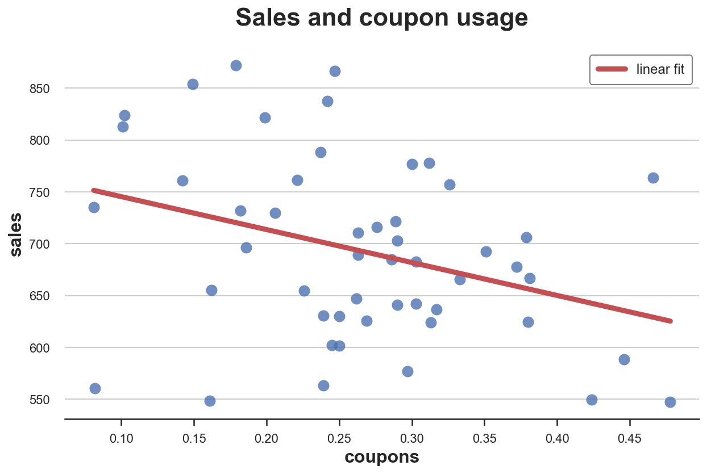
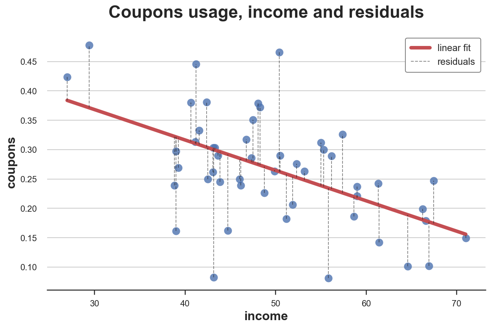
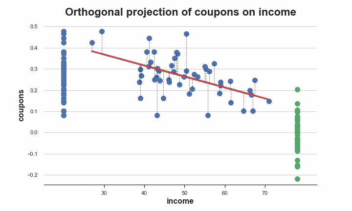
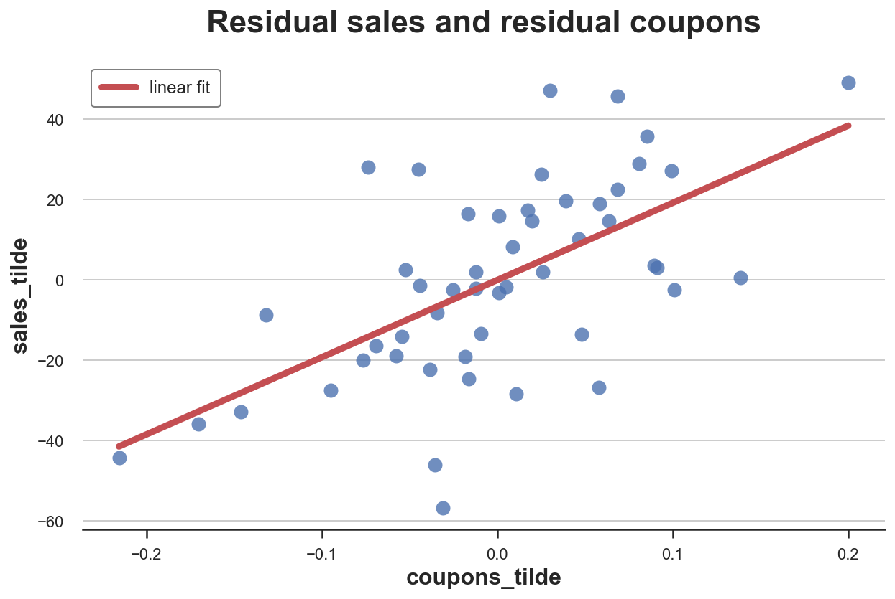
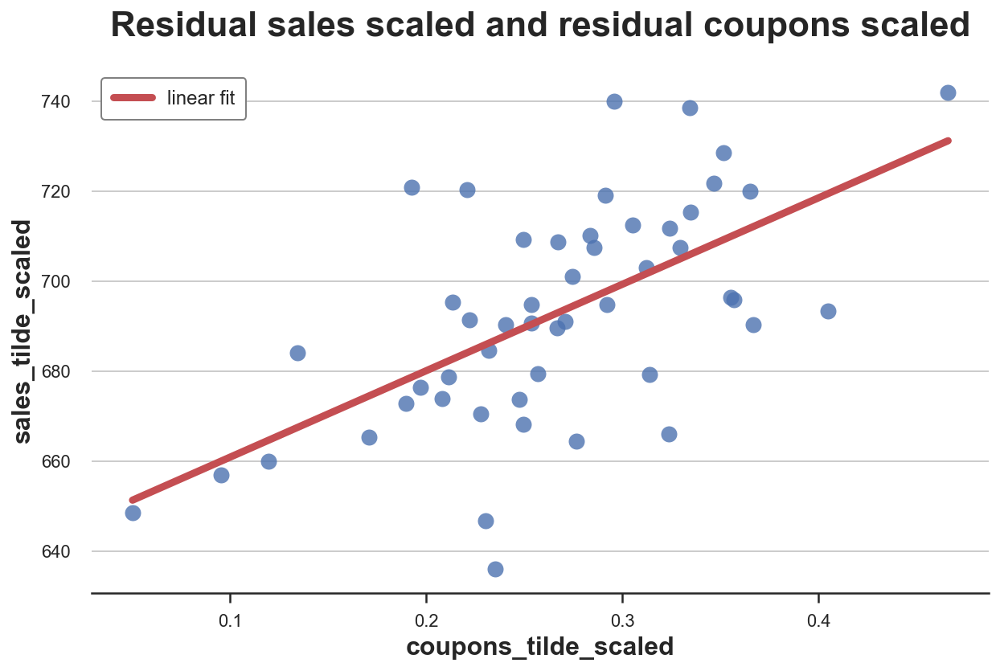

The FWL Theorem, Or How To Make All Regressions Intuitive

An introduction to the Frisch-Waugh-Lowell theorem and how to use it to gain intuition in linear regressions
The Frisch-Waugh-Lowell theorem is a simple but yet powerful theorem that allows us to reduce multivariate regressions to univariate ones. This is extremely useful when we are interested in the relationship between two variables, but we still need to control for other factors, as it is often the case in causal inference.
In this blog post, I am going to introduce the Frisch-Waugh-Lowell theorem and illustrate some interesting applications.
The Theorem
The theorem was first published by Ragnar Frisch and Frederick Waugh in 1933. However, since its proof was lengthy and cumbersome, Michael Lovell in 1963 provided a very simple and intuitive proof and his name was added to the theorem name.
The theorem states that, when estimating a model of the form
$$ y_i = \beta_1 x_{i,1} + \beta_2 x_{i,2} + \varepsilon_i $$
then, the following estimators of $\beta_1$ are equivalent:
- the OLS estimator obtained by regressing $y$ on $x_1$ and $x_2$
- the OLS estimator obtained by regressing $y$ on $\tilde x_1$
- where $\tilde x_1$ is the residual from the regression of $x_1$ on $x_2$
- the OLS estimator obtained by regressing $\tilde y$ on $\tilde x_1$
- where $\tilde y$ is the residual from the regression of $y$ on $x_2$
Interpretation
What did we actually learn?
The Frisch-Waugh-Lowell theorem is telling us that there are multiple ways to estimate a single regression coefficient. One possibility is to run the full regression of $y$ on $x$, as usual.
However, we can also regress $x_1$ on $x_2$, take the residuals, and regress $y$ only those residuals. The first part of this process is sometimes referred to as partialling-out (or orthogonalization, or residualization) of $x_1$ with respect to $x_2$. The idea is that we are isolating the variation in $x_1$ that is orthogonal to $x_2$. Note that $x_2$ can be also be multi-dimensional (i.e. include multiple variables and not just one).
Why would one ever do that?
This seems like a way more complicated procedure. Instead of simply doing the regression in 1 step, now we need to do 2 or even 3 steps. It’s not intuitive at all. The main advantage comes from the fact that we have reduced a multivariate regression to a univariate one, making more tractable and more intuitive.
We will later explore more in detail three applications:
- data visualization
- computational speed
- further applications for inference
However, let’s first explore the theorem more in detail with an example.
Example
Suppose we were a retail chain, owning many different stores in different locations. We come up with a brilliant idea to increase sales: give away discounts in the form of coupons. We print a lot of coupons and we distribute them around.
To understand whether our marketing strategy worked, in each store, we check the average daily sales and which percentage of shoppers used a coupon. However, there is one problem: we are worried that higher income people are less likely to use the discount, but usually they spend more. To be safe, we also record the average income in the neighborhood of each store.
We can represent the data generating process with a Directed Acyclic Graph (DAG). If you are not familiar with DAGs, I have written a short introduction to Directed Acyclic Graphs here.
flowchart LR
classDef included fill:#DCDCDC,stroke:#000000,stroke-width:2px;
classDef excluded fill:#ffffff,stroke:#000000,stroke-width:2px;
classDef unobserved fill:#ffffff,stroke:#000000,stroke-width:2px,stroke-dasharray: 5 5;
X1((coupons))
X2((income))
X3((weekday))
Y((sales))
X1 --> Y
X2 --> X1
X2 --> Y
X3 --> Y
class X1,X2,X3,Y excluded;
Let’s load and inspect the data. I import the data generating process from src.dgp and some plotting functions and libraries from src.utils.
%matplotlib inline
%config InlineBackend.figure_format = 'retina'
from src.utils import *
from src.dgp import dgp_store_coupons
df = dgp_store_coupons().generate_data(N=50)
df.head()
| sales | coupons | income | dayofweek | |
|---|---|---|---|---|
| 0 | 821.7 | 0.199 | 66.243 | 2 |
| 1 | 602.3 | 0.245 | 43.882 | 3 |
| 2 | 655.1 | 0.162 | 44.718 | 5 |
| 3 | 625.8 | 0.269 | 39.270 | 4 |
| 4 | 696.6 | 0.186 | 58.654 | 1 |
We have information on 50 stores, for which we observe the percentage of customers that use coupons, daily sales (in thousand $), average income of the neighborhood (in thousand $), and day of the week.
Suppose we were directly regressing sales on coupon usage. What would we get? I represent the result of the regression graphically, using seaborn regplot.
sns.regplot(x="coupons", y="sales", data=df, ci=False, line_kws={'color':'r', 'label':'linear fit'})
plt.legend()
plt.title(f"Sales and coupon usage");

It looks like coupons were a bad idea: in stores where coupons are used more, we observe lower sales.
However, it might just be that people with higher income are using less coupons, while also spending more. If this was true, it could bias our results. In terms of the DAG, it means that we have a backdoor path passing through income, generating a non-causal relationship.
flowchart LR
classDef included fill:#DCDCDC,stroke:#000000,stroke-width:2px;
classDef excluded fill:#ffffff,stroke:#000000,stroke-width:2px;
classDef unobserved fill:#ffffff,stroke:#000000,stroke-width:2px,stroke-dasharray: 5 5;
X1((coupons))
X2((income))
X3((weekday))
Y((sales))
X1 --> Y
X2 --> X1
X2 --> Y
X3 --> Y
class X1,Y included;
class X2,X3 excluded;
linkStyle 1,2 stroke:#ff0000,stroke-width:4px;
In order to recover the causal effect of coupons on sales we need to condition our analysis on income. This will block the non-causal path passing through income, leaving only the direct path from coupons to sales open, allowing us to estimate the causal effect.
flowchart LR
classDef included fill:#DCDCDC,stroke:#000000,stroke-width:2px;
classDef excluded fill:#ffffff,stroke:#000000,stroke-width:2px;
classDef unobserved fill:#ffffff,stroke:#000000,stroke-width:2px,stroke-dasharray: 5 5;
X1((coupons))
X2((income))
X3((weekday))
Y((sales))
X1 --> Y
X2 -.-> X1
X2 -.-> Y
X3 --> Y
class X1,X2,Y included;
class X3 excluded;
linkStyle 0 stroke:#00ff00,stroke-width:4px;
Let’s implement this, by including income in the regression.
smf.ols('sales ~ coupons + income', df).fit().summary().tables[1]
| coef | std err | t | P>|t| | [0.025 | 0.975] | |
|---|---|---|---|---|---|---|
| Intercept | 161.4982 | 33.253 | 4.857 | 0.000 | 94.601 | 228.395 |
| coupons | 218.7548 | 50.058 | 4.370 | 0.000 | 118.052 | 319.458 |
| income | 9.5094 | 0.480 | 19.818 | 0.000 | 8.544 | 10.475 |
Now the estimated effect of coupons on sales is positive and significant. Coupons were actually a good idea after all.
Verifying the Theorem
Let’s now verify that the Frisch-Waugh-Lowell theorem actually holds. In particular, we want to check whether we get the same coefficient if, instead of regressing sales on coupons and income, we were
- regressing
couponsonincome - computing the residuals
coupons_tilde, i.e. the variation incouponsnot explained byincome - regressing
salesoncoupons_tilde
df['coupons_tilde'] = smf.ols('coupons ~ income', df).fit().resid
smf.ols('sales ~ coupons_tilde - 1', df).fit().summary().tables[1]
| coef | std err | t | P>|t| | [0.025 | 0.975] | |
|---|---|---|---|---|---|---|
| coupons_tilde | 218.7548 | 1275.236 | 0.172 | 0.865 | -2343.929 | 2781.438 |
Yes, the coefficient is the same! However, the standard errors now have increased a lot and the estimated coefficient is not significantly different from zero anymore.
A better approach is to add a further step and repeat the same procedure also for sales:
- regressing
salesonincome - computing the residuals
sales_tilde, i.e. the variation insalesnot explained byincome
and finally regress sales_tilde on coupons_tilde.
df['sales_tilde'] = smf.ols('sales ~ income', df).fit().resid
smf.ols('sales_tilde ~ coupons_tilde - 1', df).fit().summary().tables[1]
| coef | std err | t | P>|t| | [0.025 | 0.975] | |
|---|---|---|---|---|---|---|
| coupons_tilde | 218.7548 | 49.025 | 4.462 | 0.000 | 120.235 | 317.275 |
The coefficient is still exactly the same, but now also the standard errors are almost identical.
Projection
What is partialling-out (or residualization, or orthogonalization) actually doing? What is happening when we take the residuals of coupons with respect to income?
We can visualize the procedure in a plot. First, let’s actually display the residuals of coupons with respect to income.
df["coupons_hat"] = smf.ols('coupons ~ income', df).fit().predict()
ax = sns.regplot(x="income", y="coupons", data=df, ci=False, line_kws={'color':'r', 'label':'linear fit'})
ax.vlines(df["income"], np.minimum(df["coupons"], df["coupons_hat"]), np.maximum(df["coupons"], df["coupons_hat"]),
linestyle='--', color='k', alpha=0.5, linewidth=1, label="residuals");
plt.legend()
plt.title(f"Coupons usage, income and residuals");

The residuals are the vertical dotted lines between the data and the linear fit, i.e. the part of the variation in coupons unexplained by income.
By partialling-out, we are removing the linear fit from the data and keeping only the residuals. We can visualize this procedure with a gif. I import the code from the src.figures file that you can find here.
from src.figures import gif_projection
gif_projection(x='income', y='coupons', df=df, gifname="gifs/fwl.gif")

The original distribution of the data is on the left in blue, the partialled-out data in on the right in green. As we can see, partialling-out removes both the level and the trend in coupons that is explained by income.
Multiple Controls
We can use the Frisch-Waugh-Theorem also when we have multiple control variables. Suppose that we wanted to also include day of the week in the regression, to increase precision.
smf.ols('sales ~ coupons + income + dayofweek', df).fit().summary().tables[1]
| coef | std err | t | P>|t| | [0.025 | 0.975] | |
|---|---|---|---|---|---|---|
| Intercept | 124.2721 | 28.764 | 4.320 | 0.000 | 66.182 | 182.362 |
| dayofweek[T.2] | 7.7703 | 14.607 | 0.532 | 0.598 | -21.729 | 37.270 |
| dayofweek[T.3] | 15.0895 | 11.678 | 1.292 | 0.204 | -8.495 | 38.674 |
| dayofweek[T.4] | 28.2762 | 9.868 | 2.866 | 0.007 | 8.348 | 48.204 |
| dayofweek[T.5] | 44.0937 | 10.214 | 4.317 | 0.000 | 23.467 | 64.720 |
| dayofweek[T.6] | 50.7664 | 13.130 | 3.866 | 0.000 | 24.249 | 77.283 |
| dayofweek[T.7] | 57.3142 | 12.413 | 4.617 | 0.000 | 32.245 | 82.383 |
| coupons | 192.0262 | 39.140 | 4.906 | 0.000 | 112.981 | 271.071 |
| income | 9.8152 | 0.404 | 24.314 | 0.000 | 9.000 | 10.630 |
We can perform the same procedure as before, but instead of partialling-out only income, now we partial out both income and day of the week.
df['coupons_tilde'] = smf.ols('coupons ~ income + dayofweek', df).fit().resid
df['sales_tilde'] = smf.ols('sales ~ income + dayofweek', df).fit().resid
smf.ols('sales_tilde ~ coupons_tilde - 1', df).fit().summary().tables[1]
| coef | std err | t | P>|t| | [0.025 | 0.975] | |
|---|---|---|---|---|---|---|
| coupons_tilde | 192.0262 | 35.803 | 5.363 | 0.000 | 120.078 | 263.974 |
We still get exactly the same coefficient!
Applications
Let’s now inspect some useful applications of the FWL theorem.
Data Visualization
One of the advantages of the Frisch-Waugh-Theorem is that it allows us to estimate the coefficient of interest from a univariate regression, i.e. with a single explanatory variable (or feature).
Therefore, we can now represent the relationship of interest graphically. Let’s plot the residual sales against the residual coupons.
sns.regplot(x="coupons_tilde", y="sales_tilde", data=df, ci=False, line_kws={'color':'r', 'label':'linear fit'})
plt.legend()
plt.title(f"Residual sales and residual coupons");

Now it’s evident from the graph that the conditional relationship between sales and coupons is positive.
One problem with this approach is that the variables are hard to interpret: we now have negative values for both sales and coupons. Weird.
Why did it happen? It happened because when we partialled-out the variables, we included the intercept in the regression, effectively de-meaning the variables (i.e. normalizing their values so that their mean is zero).
We can solve this problem by scaling both variables, adding their mean.
df['coupons_tilde_scaled'] = df['coupons_tilde'] + np.mean(df['coupons'])
df['sales_tilde_scaled'] = df['sales_tilde'] + np.mean(df['sales'])
Now the magnitudes of the two variables are interpretable again.
sns.regplot(x="coupons_tilde_scaled", y="sales_tilde_scaled", data=df, ci=False, line_kws={'color':'r', 'label':'linear fit'})
plt.legend()
plt.title(f"Residual sales scaled and residual coupons scaled");

Is this a valid approach or did it alter our estimates? We can can check it by running the regression with the scaled partialled-out variables.
smf.ols('sales_tilde_scaled ~ coupons_tilde_scaled', df).fit().summary().tables[1]
| coef | std err | t | P>|t| | [0.025 | 0.975] | |
|---|---|---|---|---|---|---|
| Intercept | 641.6486 | 10.017 | 64.054 | 0.000 | 621.507 | 661.790 |
| coupons_tilde_scaled | 192.0262 | 36.174 | 5.308 | 0.000 | 119.294 | 264.758 |
The coefficient is exactly the same as before!
Computational Speed
Another application of the Frisch-Waugh-Lovell theorem is to increase the computational speed of linear estimators. For example it is used to compute efficient linear estimators in presence of high-dimensional fixed effects (day of the week in our example).
Some packages that exploit the Frisch-Waugh-Lovell theorem include
However, it’s important to also mention the fixest package in R, which is also exceptionally efficient in running regressions with high dimensional fixed effects.
Inference and Machine Learning
Another important application of the FWL theorem sits at the intersection of machine learning and causal inference. I am referring to the work on post-double selection by Belloni, Chernozhukov, Hansen (2013) and the follow up work on “double machine learning” by Chernozhukov, Chetverikov, Demirer, Duflo, Hansen, Newey, Robins (2018).
I plan to cover both applications in future posts, but I wanted to start with the basics. Stay tuned!
References
[1] R. Frisch and F. V. Waugh, Partial Time Regressions as Compared with Individual Trends (1933), Econometrica.
[2] M. C. Lowell, Seasonal Adjustment of Economic Time Series and Multiple Regression Analysis (1963), Journal of the American Statistical Association.
I hold a PhD in economics from the University of Zurich. Now I work at the intersection of economics, data science and statistics. I regularly write about causal inference on Medium.